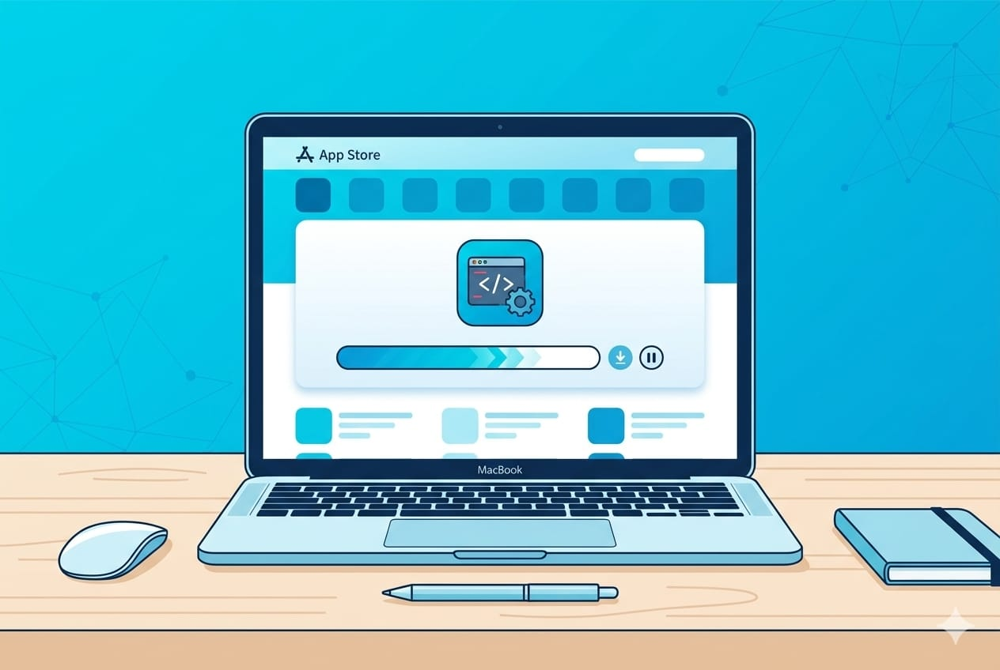
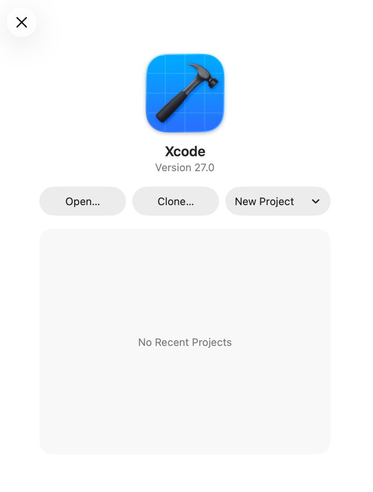
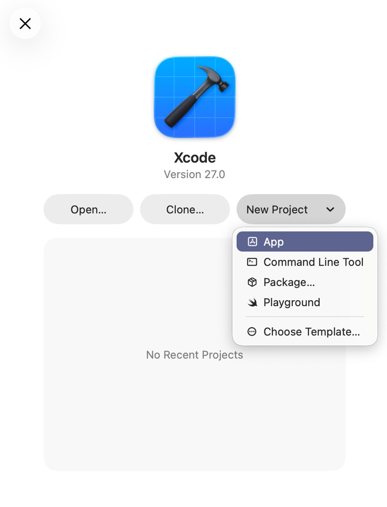
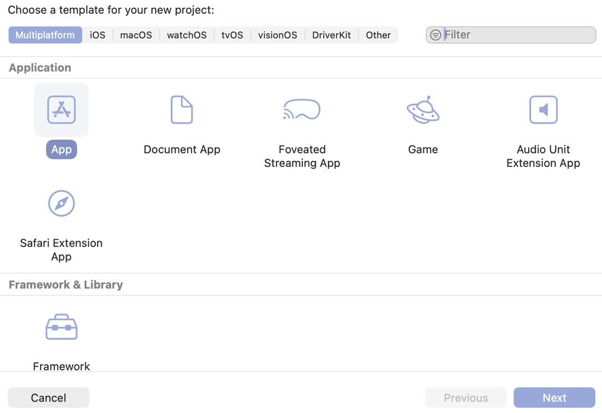
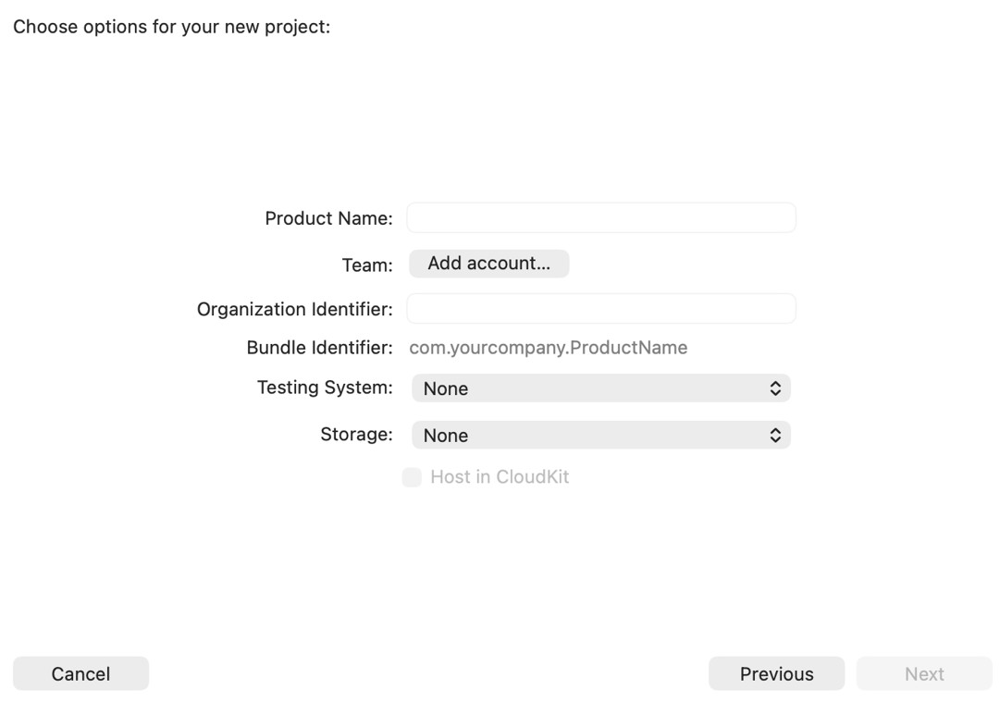
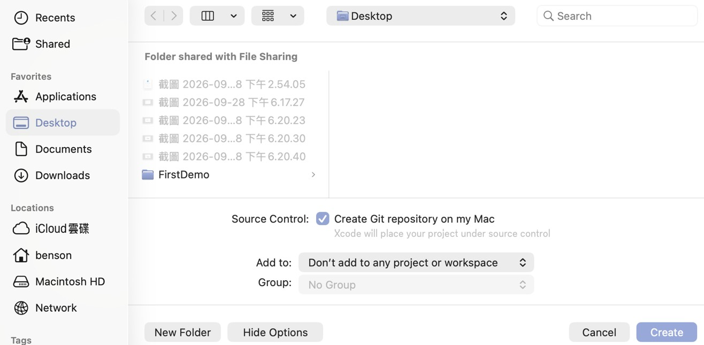
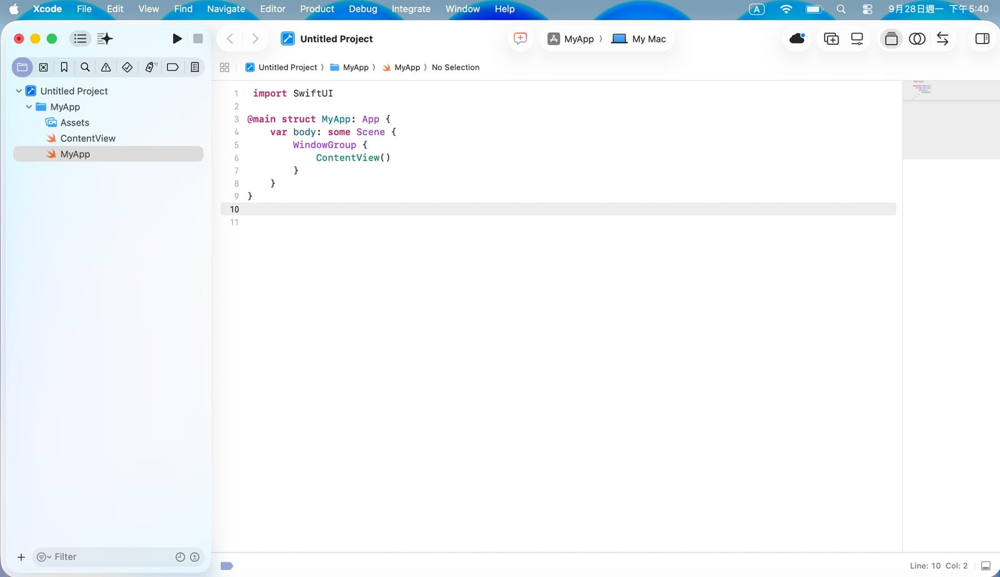
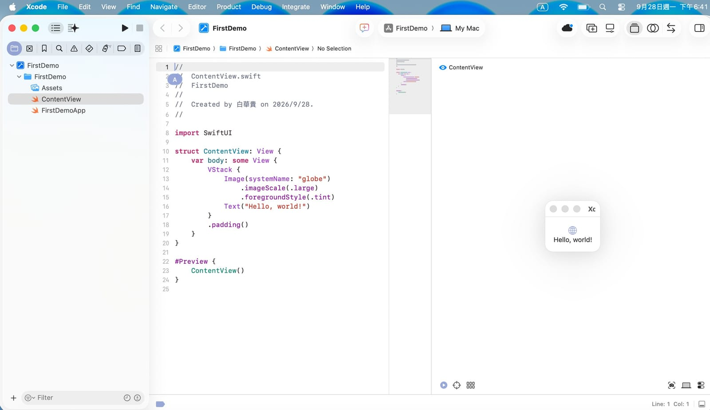
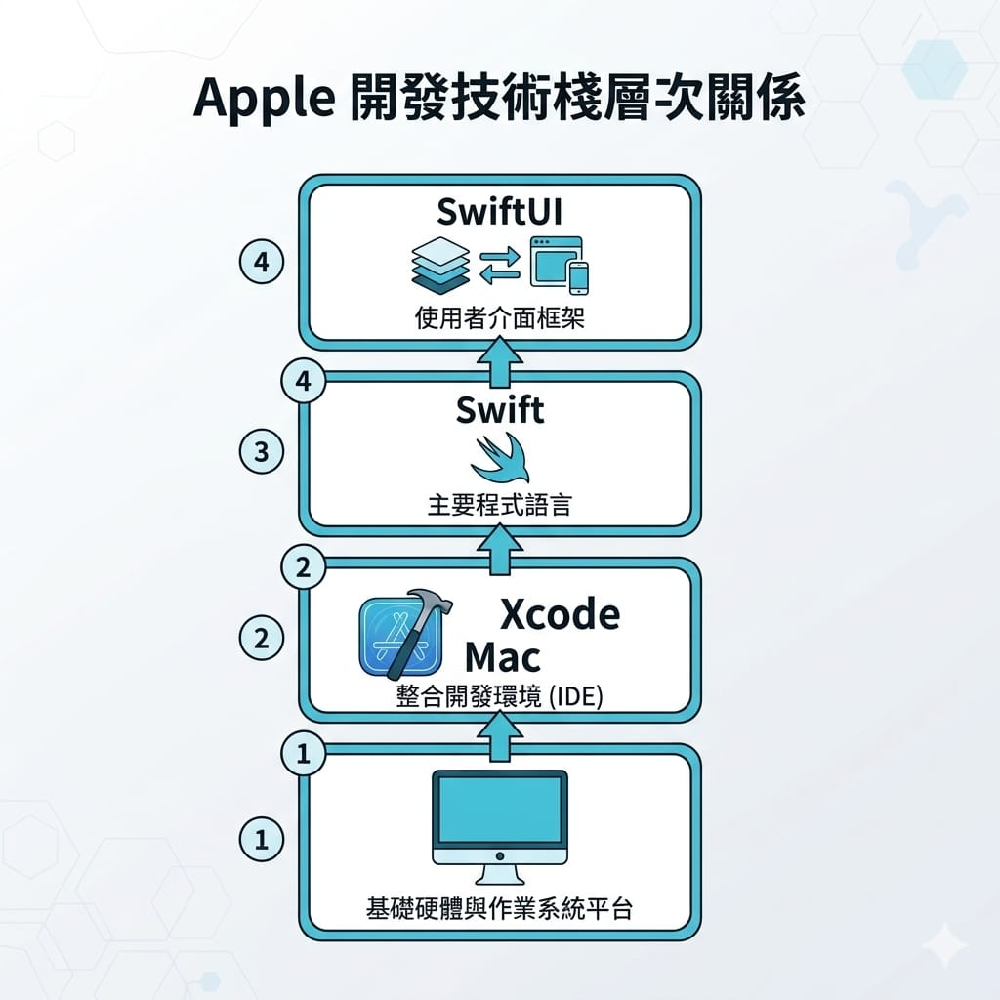

在上一篇總覽裡，我們把 App 開發的整張地圖攤開來看過了。從這篇開始，正式進入 iOS 開發的學習路徑。
第一關不是寫程式，而是把開發環境準備好。這一步看起來雜，但其實只要照著做，一個下午就能搞定。準備好之後，後面才能專心學怎麼寫。
這篇會帶你完成四件事：搞懂為什麼要 Mac、安裝 Xcode、準備 Apple ID 與開發者帳號、認識 Swift 和 SwiftUI 是什麼。
一、為什麼一定要 Mac？
先講最現實的一件事：開發 iPhone App，你需要一台 Mac。
原因是 iOS 開發唯一的官方工具 Xcode 只能裝在 macOS 上，Windows 和 Linux 都不行。這不是建議，是硬性限制。所以如果你手上只有 Windows 電腦，想做 iOS 就得先解決 Mac 的問題。
哪種 Mac 就夠？ 好消息是，學習和開發中小型 App 不需要頂規機器：
- 近幾年的 MacBook Air、Mac mini（Apple 晶片 M 系列）都很夠用，Mac mini 尤其划算。
- 記憶體建議 16GB 以上會比較舒服（Xcode 蠻吃記憶體的），8GB 也能跑但編譯大專案會比較喘。
- 硬碟至少留 50GB 以上空間，因為 Xcode 加上模擬器很佔空間。
- 二手機也是務實選擇，預算有限可以考慮。
如果你還在猶豫要不要為了學 iOS 買 Mac，可以回頭看總覽篇的建議：手上只有 Windows、想先省錢入門的人，也可以先從 Android 開始。
二、安裝 Xcode
有了 Mac，接下來裝 Xcode。它是 Apple 官方的整合開發環境（IDE），完全免費，寫程式、設計畫面、測試、上架全部都在裡面完成。

安裝步驟很單純：
- 打開 Mac 上的 App Store（Mac 內建的那個）。
- 搜尋「Xcode」。
- 點下載安裝。
要注意兩件事：
- 檔案很大（十幾 GB 起跳），下載加安裝要一段時間，建議接電源、用穩定網路，去泡杯咖啡。
- Xcode 對 macOS 版本有要求。每個 Xcode 版本都需要對應的 macOS 版本才能裝。截至查證時（2026-09-27），最新穩定版 Xcode 需要較新的 macOS（例如 macOS 15.6 以上），實際請以 Apple 官方系統需求頁為準。如果 App Store 顯示你的系統太舊裝不了最新版，先把 macOS 更新到最新即可。
裝好後打開 Xcode，第一次啟動它會再安裝一些附加元件，跟著點「同意／安裝」就好。看到歡迎畫面（可以新建專案的那個）就代表成功了。
三、認識 Xcode 介面
第一次打開 Xcode 會有點嚇到——畫面塞得很滿，按鈕一大堆。別緊張，你不用一開始就全懂，先認得幾個主要區塊，之後用到自然會熟。
打開 Xcode 會先看到歡迎畫面，上面有版本號和幾顆按鈕（Open、Clone、New Project）。第一次還沒有專案，所以下方會顯示「No Recent Projects」，很正常。

先新建一個專案來看：在歡迎畫面點 New Project 旁邊的小箭頭，會展開一個選單，選 App（選單裡還有 Command Line Tool、Package、Playground 等，我們要的是 App）。

選 App 後會進到「Choose options」設定畫面。
（補充：如果你是走選單最下面的 Choose Template…，會先多一個範本選擇畫面，上面有 Multiplatform／iOS／macOS 等分頁，在 Application 區點 App、按 Next，就會進到同一個設定畫面。兩條路殊途同歸。）


新版 Xcode 這一頁很單純，已經不會問你要 SwiftUI 還是 Storyboard、也不問語言了——因為現在建 App 專案預設就是 SwiftUI + Swift（這正好是我們要的，免煩惱）。你只要填/選這幾個：
- Product Name：你的 App 名稱，例如打
MyFirstApp。 - Team：先留著沒關係（要裝到實體 iPhone 時再回來設，後面會講）。
- Organization Identifier：組織識別碼，習慣用反向網域，例如
com.你的名字。它會和 Product Name 組成下面的 Bundle Identifier（App 的唯一 ID，自動產生不用手動改）。 - Testing System：新手選 None 就好（要不要自動測試之後再說）。
- Storage：新手選 None。這裡的 SwiftData / Core Data 是資料庫方案，等你之後要存大量資料再用（我們在資料篇會談觀念）。
填好按 Next，會再跳出一個視窗要你選存放位置（例如選桌面 Desktop）。這裡可以勾選「Create Git repository on my Mac」（幫專案做版本控制，建議勾，之後好管理），最後按右下角的 Create，專案才真正建立完成。

建好後進入主畫面，大概長這樣：

把它想成幾個主要區塊：
- ① 導覽器（左側 Navigator）：你專案裡所有檔案的清單（例如
ContentView、MyApp這些）。要打開哪個檔案就點它。最上面那排小圖示可以切換不同視圖（檔案、搜尋、錯誤等），平常用第一個「檔案」視圖最多。 - ② 編輯區（中間 Editor）：寫程式的主場，你選的檔案內容顯示在這裡，程式碼都在這打。剛建好時它預設打開的是
MyApp這個 App 進入點檔案。 - ③ 偵錯區（底部 Debug Area）：App 跑起來後，
print印出的訊息、錯誤、當機資訊都出現在這。抓 bug 時很重要，平常沒跑時可能是收起來的。 - ④ 檢閱器（右側 Inspector）：顯示你目前選取項目的屬性設定，可微調。剛開始用得少，右上角的按鈕可以開關它。
關於即時預覽（Canvas）：SwiftUI 有個很好用的即時預覽，能一邊寫一邊看畫面。它要點開有畫面內容的檔案（例如左側的 ContentView）才會出現。試著點一下 ContentView，你就會看到右側跳出一個小小的手機預覽，顯示一個地球圖示和「Hello, world!」——那就是這個範本專案預設的畫面。

（剛建好時預設打開的是 MyApp 檔，它是 App 進入點、沒有畫面，所以那時看不到預覽是正常的。若預覽沒自動出現，可從編輯區右上角的按鈕打開。下一篇做畫面時我們會大量用到它。）
頂部工具列：中間會顯示目前要跑在哪個裝置。剛建好可能是「My Mac」，你可以點它換成 iPhone 模擬器（做手機 App 通常選模擬器）。旁邊的 ▶ 執行鈕按下去就會建置並執行 App，還有一個 ■ 停止鈕。
介面看起來很多，但現階段你只要記得三件事就夠開始：左邊找檔案、中間寫程式、上面按執行。其他區塊會在後面的篇章用到時再帶。
四、準備 Apple ID 與開發者帳號
寫程式和在模擬器測試，用免費的 Apple ID 就夠了——你平常用的那個就行。
但有兩個時間點你會需要更進一步：
1. 想把 App 裝到自己的實體 iPhone 上測試 用免費 Apple ID 也可以，只是有一些限制（例如憑證有效期較短、App 數量有限）。一般學習階段夠用。實際的操作步驟，我們會在 iOS-3 做出第一個 App 之後示範——因為要先有 App 才裝得上去。
2. 想把 App 上架到 App Store，或用 TestFlight 給別人測試 這時就必須加入付費的 Apple Developer Program。截至查證時（2026-09-27），費用是每年 US$99（來源：Apple 官方會員比較頁），要持續續約才能維持上架狀態。
建議的節奏：現在學習階段先不用急著付費，用免費 Apple ID 就能開始寫、在模擬器上跑。等到你真的要把 App 放上架（也就是這個系列後面的上架專篇），再來註冊付費帳號，錢花在刀口上。
別忘了幫你的 Apple ID 開啟雙重認證（two-factor authentication），這是 Apple 的基本要求，也保護你的帳號安全。
五、認識你的工具：Swift 與 SwiftUI
環境裝好了，最後認識一下接下來要用的兩個核心工具，它們常被搞混：

- Swift：程式語言，是你用來寫邏輯的工具。Apple 官方主推、現代、語法相對好讀。它會告訴 App「該怎麼運作」。
- SwiftUI：畫面框架，用來刻使用者介面（按鈕、文字、清單那些看得到的東西）。它的特色是「宣告式」寫法——你描述畫面長怎樣，它幫你畫出來，程式碼很精簡。
打個比方：如果 App 是一棟房子，Swift 是建材和工法，SwiftUI 是室內設計的工具。兩個搭配，就能把畫面和功能都做出來。
它們的關係是這樣堆疊的：Mac（硬體）→ Xcode（開發工具）→ Swift（語言）→ SwiftUI（畫面框架）。這篇我們把最底下兩層準備好了，接下來就是往上學語言和畫面。
你可能也聽過舊的 UIKit。它是 SwiftUI 之前的畫面框架，現在仍廣泛存在於既有專案，但新手直接學 Apple 主推的 SwiftUI 就好，更現代、更省程式碼。
這一步大約要花多久？
準備環境本身不難，時間主要花在下載和熟悉介面：
- 買/借到 Mac、更新系統：依你的情況。
- 下載安裝 Xcode：半天內（主要在等下載）。
- 註冊 Apple ID、開雙重認證：十幾分鐘。
- 打開 Xcode 到處點、熟悉介面：抓 3~5 天慢慢摸。
不用急著全懂 Xcode 的每個按鈕，很多功能會在後面用到時自然學會。這階段的目標很單純：能打開 Xcode、新建一個空專案、在模擬器把它跑起來，看到那個空白 App 在模擬的 iPhone 上出現，你就成功踏出第一步了。
下一篇
環境備妥後，下一篇進入 Swift 語言基礎——變數、型別、流程控制、函式，還有 Swift 很有特色的「可選型別」。這是真正開始寫程式的地方，也是需要多花點時間扎實練的一篇。
想紮實學會 iOS 開發，別跳過基礎，一步一步來最快。我們下篇見。🐾
系列導覽
- 📚 回到 App 開發完整指南 全系列目錄
- ⬅️ 上一篇：iPhone 與 Android 開發完整地圖（總覽）
- ➡️ 下一篇：Swift 語言基礎